The ethical dillema that this page is about is if AI should be allowed to replace human employees in various jobs. Below are some arguments that both sides present.

This ethical dillema affects everyone in some way, because it affects all employed people. However, some are affected more than others. Here are some of the most impacted groups.
Jobs that mostly involve taking orders and operating registers have already started to be automated at a mass scale, with companies like Wendy’s, Burger King, KFC, and Taco Bell already using artificial intelligence in drive-thrus. Jobs like these have started seeing a huge drop in employees since a early as 2019, with AI being one of the main reasons.
Office jobs typically have employees complete very repetitive tasks. These tasks usually follow very strict patterns. As a result, artificial intelligence can easily automate most of this work. Already, jobs like these have reported seeing very large drops in employment and very large spikes in AI useage.
At the highest level of the corporate ladder are the people who are making tons of money due to the artificial intelligence job crisis lowering the cost of employees, and the artificial intelligence outperforming the humans.
The best possible solution, according to presented evedence, would be to allow AI to be used to assist human employees, but not replace the, due to getting benefits from both sides of the argument. Below are some positives and negatives of this solution.
If AI is allowed to assist humans while working, we will get the benefit of boosted productivity that the AI provides.
Because AI would be used with this solution, AI will stil grow and more jobs will be created because of the growth, but without AI taking jobs also.
Due to the fact that AI has all of the information on the internet, it can create higher quality output than a human could on their own.
AI in general has a lot of major downsides. Due to the use of AI in this solution, it promotes the growth of AI, and therefore also promotes the growth of these problems.
AI data centers use a lot of water to cool data centers. As mentioned earlier, the use of AI in this solution promotes the growth of AI ant also problems like these.
AI data centers need a lot of computer power to operate. Because of this, AI eats up most of the avalible computer parts, leaving almost nothing for us. You may think this does not effect you, but samsung and apple have already reported shortages, and are going to start charging more for prodducts in the near future if this goes on.
Talmage-Rostron, M. (2025, June 29). How Will Artificial Intelligence Affect Jobs 2023-2030. Nexford University; Nexford University. https://www.nexford.edu/insights/how-will-ai-affect-jobs
Prestianni, T. (2025, May 30). 59 AI Job Statistics: Future of U.S. Jobs. National University. https://www.nu.edu/blog/ai-job-statistics/
Urwin, M. (2025, May 15). AI Taking over Jobs: What to Know about the Future of Jobs. Built In. https://builtin.com/artificial-intelligence/ai-replacing-jobs-creating-jobs
What Jobs Will AI Replace? A Guide to Staying Relevant at Work. (2025). Turingcollege.com. https://www.turingcollege.com/blog/what-jobs-will-ai-replace
Understanding Which Jobs AI Might Replace. (n.d.). Mailchimp. https://mailchimp.com/resources/what-jobs-will-ai-replace/